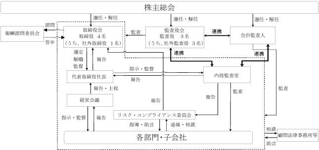

(注) 「提出日現在の発行数」欄には、2024年４月１日からこの有価証券報告書提出日までの新株予約権の行使により発行された株式数は含まれておりません。
※ 当事業年度の末日(2024年１月31日)における内容を記載しております。なお、提出日の前月末(2024年３月31日)現在において、これらの事項に変更はありません。
(注) １．新株予約権１個につき目的となる株式数は、200株です。
ただし、新株予約権の割当日後、当社が株式分割又は株式併合を行う場合は、以下の算式により目的となる株式数を調整する。ただし、かかる調整は、新株予約権のうち、当該時点で行使されていない新株予約権の目的となる株式数について行われ、調整の結果生じる１株未満の端数は、これを切り捨てる。
２．新株予約権の割当日後、当社が株式分割又は株式併合を行う場合は、行使価額は以下の算式により調整され、調整により生じる１円未満の端数は切り上げる。
また、新株予約権の割当日後に時価を下回る価額で新株式の発行又は自己株式の処分を行う場合は、以下の算式により行使価額を調整し、調整により生じる１円未満の端数は切り上げる。
３．組織再編に伴う新株予約権の承継
当社が、合併(当社が合併により消滅する場合に限る。)、吸収分割、新設分割、株式交換又は株式移転(以上を総称して以下、「組織再編行為」という。)をする場合において、組織再編行為の効力発生の時点において残存する新株予約権(以下、「残存新株予約権」という。)の新株予約権者に対し、それぞれの場合につき、会社法第236条第１項第８号のイからホまでに掲げる株式会社(以下、「再編対象会社」という。)の新株予約権を以下の条件に沿ってそれぞれ交付する。この場合においては、残存する新株予約権は消滅し、再編対象会社は新株予約権を新たに発行するものとする。ただし、本号の取扱いは、本号に定める条件に沿って再編対象会社の新株予約権を交付する旨を、吸収合併契約、新設合併契約、吸収分割契約、新設分割計画、株式交換契約又は株式移転計画において定めた場合に限るものとする。
(1) 交付する再編対象会社の新株予約権の数
残存新株予約権の新株予約権者が保有する新株予約権の数と同一の数をそれぞれ交付する。
(2) 新株予約権の目的である再編対象会社の株式の種類
再編対象会社の普通株式とする。
(3) 新株予約権の目的である再編対象会社の株式の数
組織再編行為の条件等を勘案のうえ、現行の発行内容に準じて決定する。
(4) 新株予約権の行使に際して出資される財産の価額
交付される各新株予約権の行使に際して出資される財産の価額は、組織再編行為の条件等を勘案のうえ調整した再編後の行使価額に上記(3)に従って決定される当該新株予約権の目的である株式の数を乗じて得られるものとする。
(5) 新株予約権を行使することができる期間
現行の発行内容に定める新株予約権を行使することができる期間の開始日と組織再編行為の効力発生日のいずれか遅い日から、現行の発行内容に定める新株予約権を行使することができる期間の満了日までとする。
(6) 譲渡による新株予約権の取得の制限
譲渡による新株予約権の取得については、再編対象会社の承認を要するものとする。
(7) 再編対象会社による新株予約権の取得
現行の発行内容に準じて決定する。
(8) 新株予約権の行使により株式を発行する場合における増加する資本金及び資本準備金に関する事項
現行の発行内容に準じて決定する。
４．本書提出日現在の「付与対象者の区分及び人数」は、当社取締役１名、当社従業員８名となっております。
５．本書提出日現在の「付与対象者の区分及び人数」は、当社取締役１名、当社従業員６名となっております。
６．「新株予約権の数（個）」及び「新株予約権の目的となる株式の種類、内容及び数」は、付与対象者の権利行使により減少したものを減じた数であります。
該当事項はありません。
③ 【その他の新株予約権等の状況】
該当事項はありません。
該当事項はありません。
(注) １．普通株式1株につき10株の株式分割によるものであります。
２．有償一般募集（ブックビルディング方式による募集）
発行価格 2,210円
引受価額 2,033.20円
資本組入額 1,016.60円
３．有償第三者割当（オーバーアロットメントによる売出しに関する第三者割当増資）
発行価格 2,210円
資本組入額 1,016.60円
割当先 野村證券株式会社
４．新株予約権の行使による増加であります。
５．普通株式１株につき4株の株式分割によるものであります。
６．譲渡制限付株式報酬としての新株式発行によるものであります。
発行価格 1,407円
資本組入額 703.5円
割当先 当社の取締役（社外取締役を除く） １名
当社の従業員 ２名
７．譲渡制限付株式報酬としての新株式発行によるものであります。
発行価格 767円
資本組入額 383.5円
割当先 当社の取締役（社外取締役を除く） １名
当社の従業員 ２名
2024年１月31日現在
(注) 自己株式70,800株は、「個人その他」に708単元含まれております。
2024年１月31日現在
（注）１．当社は自己株式70,800株を保有しておりますが、上記大株主からは除外しております。
２．2024年2月26日付で公衆の縦覧に供されている大量保有報告書の変更報告書において、ゴーディアン・キャピタル・シンガポール・プライベート・リミテッドが2024年2月16日現在で以下の株式を所有している旨が記載されているものの、当社として2024年１月31日現在における実質所有株式数の確認ができませんので、上記大株主の状況には含めておりません。
なお、その大量保有報告書の変更報告書の内容は以下のとおりであります。
2024年１月31日現在
2024年１月31日現在
該当事項はありません。
（注）当該決議に基づく自己株式の取得は2024年1月9日をもって終了しております。
該当事項はありません。
（注）当期間における保有自己株式数には、2024年４月１日から有価証券報告書提出日までの単元未満株式の買取りによる株式数は含めておりません。
当社は、中長期にわたる企業価値向上の実現を最優先課題とし、株主に対する利益還元につきましては、成長投資とのバランスを図りながら安定的な配当を継続して実施していくことを基本方針としております。
当社は、定款の定めにより、会社法第459条第１項各号に定める事項につきまして、法令に別段に定めのある場合を除き、株主総会の決議によらず、取締役会の決議によって定めることとしております。また、剰余金の配当の基準日として期末配当の基準日（１月31日）及び中間配当の基準日（７月31日）の年２回のほか、基準日を定めて剰余金の配当を行うことができる旨を定款に定めており、配当の決定機関は取締役会であります。
上記方針に基づき、当事業年度に係る剰余金の配当は以下のとおり実施しました。
次期につきましては、収益基盤拡大のための成長投資をさらに推進すべく、当事業年度と同額の年間配当額として１株当たり15.00円（うち中間配当金5.00円）を予定しております。
当社グループは、「Ａｌｌ Ｓａｔｉｓｆａｃｔｉｏｎ －「住。」を通じてすべての人に満足を提供する－」のパーパスのもと、「デザイン×テクノロジーで人々の住生活を豊かにする」ことをミッションとして掲げております。「注文住宅」×「分譲住宅」×「不動産仲介」の３つの事業をワンストップで行い、様々な顧客ニーズにこたえることができる、日本一顧客満足度の高い住宅プラットフォーム企業になることをビジョンとしており、“こだわりのある良質な住まいをよりリーズナブルに”をバリューとして、サステナビリティの観点に基づく企業活動も重視した社会貢献度の高い企業を目指しております。継続企業として収益を拡充し企業価値を向上させ、ステークホルダーの利益を最大化するために、コーポレート・ガバナンスの確立が不可欠なものと認識しております。
具体的には、取締役会、監査役会、内部監査室、経営会議、リスク・コンプライアンス委員会、報酬諮問委員会を通じて、コーポレート・ガバナンスの強化に努めております。代表取締役会長・代表取締役社長以下、取締役等が職責に基づいて適切な経営判断を行い、経営の効率性と迅速性を高め事業活動を通じて利益を追求すること、財務の健全性を確保しその信頼性を向上させること、事業活動における透明性及び客観性を確保すべく適時適切な情報開示を行うこと、実効性のある内部統制システムを構築すること、並びに監査役が独立性を保ち十分な監査機能を発揮すること等が重要であると考えております。
当社は、当社の事業に精通した取締役を中心とする取締役会が重要な経営事項の審議及び意思決定を行い、強い法的権限を有する監査役が独立した立場から取締役の職務執行を監査する体制を構築することで、互いの牽制機能を最大限に発揮させ、経営の効率性と健全性を確保することができると判断していることから、監査役会設置会社を採用しております。また、外部からの客観的かつ中立的な経営監視の機能を高めるべく、各方面で豊富な経験と高度な専門知識、幅広い見識を有している社外取締役及び社外監査役を選任しております。
(a) 取締役会
当社の取締役会は、４名(うち社外取締役１名)で構成されております。取締役会は、原則として毎月１回定期的に開催し、経営の最高意思決定機関として重要な経営事項の審議及び意思決定を行っております。また、迅速な意思決定が必要な課題が生じた場合は、適宜、臨時取締役会を開催することとなっております。
さらに、取締役会には全ての監査役が出席し、取締役の職務執行の状況を監査できる体制となっております。
(b) 監査役会
当社の監査役会は、常勤監査役１名(社外監査役)、非常勤監査役２名(社外監査役)で構成されております。監査役会は、原則として毎月１回の定期的な開催に加え、重要な事項等が発生した場合には、必要に応じて臨時監査役会を開催しております。
監査役は公認会計士、弁護士及び警察ＯＢにより構成されており、職業倫理の観点からも経営監視を実施しております。
(c) 内部監査室
当社は、業務部門から独立した代表取締役社長直轄の内部監査室を設置しており、内部監査室長１名が経営目標の効率的な達成に役立つことを目的として、適法性並びに妥当性及び有効性の観点から公正かつ独立の立場で、経営諸活動の遂行状況を評価し、業務改善に向けた助言・勧告を行っております。
(d) 経営会議
経営会議は、取締役会へ上程する議題、業績に関する進捗状況及び今後の業績見込み等について、協議、審議及び伝達を行っております。代表取締役社長が議長を務め、原則として毎月１回定期的に開催しております。
(e) リスク・コンプライアンス委員会
リスク・コンプライアンス委員会は、コンプライアンスに関する管理体制の強化及び遵守状況の確認、法令違反発生時の対応方針の決定、並びに各種リスクの発生事例及び発生原因の情報共有、再発防止策の策定等を行っております。代表取締役社長が委員長を務め、原則として年４回の定期的な開催に加え、重大なリスクが発生した場合にも開催することとしております。
また、必要に応じ顧問法律事務所等の外部専門機関への相談も活用することとしており、法令違反及びリスク発生時の適切な対応方針の決定及び効果的な再発防止策の策定に努めております。
(f) 報酬諮問委員会
報酬諮問委員会は、取締役の報酬等の決定プロセスの客観性及び透明性を高め、経営の強化を図ることを目的に設置され、取締役個人別の報酬等の内容に係る決定に関する方針、取締役個人別の報酬等の内容並びにそれらを決議するために必要な基本方針、規則及び手続等の制定、変更、廃止について審議し、取締役会に対して助言・提言を行っております。
委員は社内取締役及び独立社外役員によって構成され、その過半数を独立社外役員が務め、原則として年１回以上開催するほか、必要に応じて臨時に開催されます。
各機関の構成員は次のとおりであります。
（注）１．◎は議長又は委員長、○は構成員、△は出席者を表しております。
２．経営会議及びリスク・コンプライアンス委員会には、上記の他、必要に応じて議長又は委員長が指名する者が参加しております。
当社のコーポレート・ガバナンスの状況を図示すると以下のとおりであります。

ａ．内部統制システムの整備状況
当社は、業務の適正性を確保するための体制として、「内部統制システムの構築に関する基本方針」を取締役会で決議しており、取締役会その他重要会議により職務の執行が効率的に行われ、法令及び定款に適合することを確保する体制作りに努めております。その他、監査役及び内部監査室が、随時必要な監査手続を実施することで役職員の職務執行状況を監視しております。
内部統制システムの整備状況の概要は、以下のとおりであります。
(内部統制システムの整備の状況)
(a) 取締役及び使用人の職務の執行が法令及び定款に適合することを確保するための体制
・取締役及び使用人は、社会倫理、法令、定款及び規程類を遵守するとともに、「経営理念」に基づいた適正かつ健全な企業活動を行っております。
・取締役会は、「取締役会規程」、「職務権限規程」等の職務の執行に関する社内規程を整備し、使用人は定められた社内規程に従い業務を執行しております。
・当社は、代表取締役社長が率先してコンプライアンス推進を統括し、コンプライアンスに関する取組み及び体制の整備、教育・研修の実施を進めております。また、当社の取締役及び使用人がコンプライアンスに違反する行為を発見したときは直ちに上長に報告するものとしております。
・代表取締役社長直轄の内部監査室を設置し、各部門の業務執行及びコンプライアンス遵守状況等の監査を定期的に実施し、その評価を代表取締役社長、取締役会及び監査役会に報告しております。また、法令違反その他法令上疑義のある行為等については、内部通報制度を構築し、取締役及び使用人が通報できる窓口を定め、適切に運用・対応を行っております。この場合、通報者の匿名性の保証と不利益が生じない体制を確保しております。
・監査役は、取締役の職務が適正に行われているか監査を実施し、内部監査室及び会計監査人と連携して助言・勧告を行っております。
(b) 取締役の職務の執行に係る情報の保存及び管理に関する体制
・取締役の職務の執行に係る記録文書、稟議書、その他の重要な情報については、文書又は電磁的媒体に記録し、法令及び「文書管理規程」、「稟議規程」等に基づき、適切に保存及び管理しております。
・「機密情報管理規程」、「個人情報管理規程」、「特定個人情報管理規程」を定め、情報の流出・漏洩を防止しております。
・取締役及び監査役は、必要に応じてこれらの文書等を閲覧できるものとしております。
(c) 損失の危険の管理に関する規程その他の体制
・取締役会は、コンプライアンス、個人情報、品質、セキュリティ及びシステムトラブル等の様々なリスクに対処するため、社内規程を整備し、定期的に見直すものとしております。
・リスク情報等については会議体等を通じて各部門責任者より取締役及び監査役に対し報告を行っております。個別のリスクに対しては、それぞれの担当部署にて、研修の実施、マニュアルの作成・配布等を行うものとし、組織横断的リスク状況の監視及び全社的対応は内部監査室が行うものとしております。
・不測の事態が発生した場合には、代表取締役社長指揮下のリスク・コンプライアンス委員会を開催し、必要に応じて顧問法律事務所等の外部専門機関とともに迅速かつ的確な対応を行い、損害の拡大を防止する体制を整えております。
・内部監査室は、各部門のリスク管理状況を監査し、その結果を代表取締役社長に報告するものとし、取締役会において定期的にリスク管理体制を見直し、問題点の把握と改善に努めております。
(d) 取締役の職務の執行が効率的に行われることを確保するための体制
・取締役の職務の執行が効率的に行われることを確保するため、取締役会の運営に関する規程を定めるとともに、取締役会を原則として月１回開催するほか、必要に応じて適宜臨時に開催しております。
・取締役会は、当社グループの財務、投資、コスト等の項目に関する目標を定め、目標達成に向けて実施すべき具体的方法を各部門に実行させ、取締役はその結果を定期的に検証し、評価、改善を行うことで全社的な業務の効率化を実現するものとしております。
・予算に基づき、予算期間における計数的目標を明示し、目標と責任を明確にするとともに、予算と実績の差異分析を通じて業績目標の達成を図っております。
(e) 当社及びその子会社から成る企業集団における業務の適正を確保するための体制
・子会社の事業展開及び事業計画の進捗を把握・管理するため、当社が定める「関係会社管理規程」に基づき、特定の事項については、子会社より事前に報告させ、当社にて事前の承認を行う体制としております。
・当社の監査役及び内部監査室が子会社の監査を行い、子会社の業務が適正に行われているか確認・指導を行っております。
(f) 監査役がその職務を補助すべき使用人を置くことを求めた場合における当該使用人に関する事項並びにその使用人の取締役からの独立性に関する事項
・監査役は、管理本部の使用人に監査業務に必要な事項を指示することができます。指示を受けた使用人はその指示に関して、取締役、部門長等の指揮命令を受けないものとしております。
・取締役及び使用人は、監査役より監査業務に必要な指示を受けた管理本部の使用人に対し、監査役からの指示の実効性が確保されるように適切に対応するものとしております。
(g) 取締役及び使用人が監査役に報告をするための体制その他の監査役への報告に関する体制
・監査役は、重要な意思決定のプロセスや業務の執行状況を把握するため、取締役会等の重要な会議に出席し、必要に応じ稟議書等の重要な文書を閲覧し、取締役及び使用人に説明を求めることができるものとしております。
・取締役及び使用人は、監査役に対して、法定の事項に加え、業務又は業績に重大な影響を与える事項、内部監査の実施状況、内部通報制度による通報状況及びその内容を報告する体制を整備し、監査役の情報収集・交換が適切に行えるよう協力しております。
・取締役及び使用人が監査役に報告を行った場合には、当該報告を行ったことを理由として不利益な取扱いを行わないこととしております。
(h) 監査役の職務の執行について生ずる費用の前払又は償還の手続その他の当該職務の執行について生ずる費用又は債務の処理に係る方針に関する事項
・監査役がその職務の執行のために費用の前払又は償還等の請求をしたときは、当該請求に係る費用又は債務が当該監査役の職務の執行に必要でないと認められた場合を除き、速やかに処理するものとしております。
(i) 財務報告の信頼性を確保するための体制
・監査役は、内部監査室と連携を図り情報交換を行い、必要に応じて内部監査に立ち会うものとしております。
・監査役は、法律上の判断を必要とする場合は、随時顧問法律事務所等に専門的な立場からの助言を受け、会計監査については、会計監査人に意見を求める等必要な連携を図ることとしております。
(j) その他監査役の監査が実効的に行われることを確保するための体制
・監査役は、会社の業績、課題及び今後の展望等を把握するため、代表取締役社長、取締役本部長、執行役員本部長との定期的な意見交換会を実施しております。
・監査役は、相互の監査計画の交換及びその説明・報告並びに各部門の監査で判明した問題点の共有を目的とし、内部監査室及び会計監査人との定期的な意見交換会を実施しております。
(k) 反社会的勢力排除に向けた基本的な考え方及びその整備状況
・反社会的勢力とは一切の関係を持たないこと、不当要求については拒絶することを基本方針とし、これを規程類に明文化しております。また、取引先がこれらと関わる個人、企業、団体等であることが判明した場合には取引を解消することとしております。
・管理本部を反社会的勢力対応部署と位置付け、情報の一元管理・蓄積等を行っております。また、役員及び使用人が基本方針を遵守するよう教育体制を構築するとともに、反社会的勢力による被害を防止するための対応方法等を整備し、周知を図っております。
・反社会的勢力による不当要求が発生した場合には、警察及び顧問法律事務所等の外部専門機関と連携し、有事の際の協力体制を構築しております。
当社では、委員長である代表取締役社長、各部門の管掌役員、監査役、内部監査室長及び代表取締役社長が指名する者で構成するリスク・コンプライアンス委員会を設置し、原則として年４回の定期的な開催に加え、重大なリスクが発生した場合にも開催することとしております。リスク・コンプライアンス委員会においては、リスク管理に関する事項や新たなリスク要因の検討に加え、各種リスクの発生事例及び発生原因の情報共有、再発防止策の策定等を行っております。
また、必要に応じ顧問法律事務所等の外部専門機関への相談も活用することとしており、リスク発生時の適切な対応方針の決定及び効果的な再発防止策の策定に努めております。
さらに、リスクに対する意識向上にかかる取組みを月１回の経営会議にて行い、リスクと認識される事項及びリスクの発生する恐れがある事項については、全社員が出席する会議にて情報共有を行っております。
当社は、会社法第459条第１項各号に定める事項について、法令に別段の定めがある場合を除き、株主総会の決議によらず取締役会の決議により定める旨を定款で定めております。これは、株主への機動的な利益還元を可能とするためであります。
当社は、会社法第165条第２項の規定により、取締役会の決議によって自己の株式を取得することができる旨を定款で定めております。これは、経営環境の変化に対応した機動的な資本政策を可能にすることを目的とするものであります。
当社は、会社法第426条第１項の規定により、取締役(取締役であった者を含む。)及び監査役(監査役であった者を含む。)の会社法第423条第１項の損害賠償責任を、善意でかつ重大な過失がない場合は、法令の定める限度額の範囲内において、取締役会の決議をもって免除することができる旨を定款に定めております。これは、取締役及び監査役が期待される役割を十分に発揮できる環境を整備することを目的とするものであります。
当社の取締役の定数は、９名以内とする旨を定款で定めております。
当社は取締役の選任決議について、株主総会において議決権を行使することができる株主の議決権の３分の１以上を有する株主が出席し、その議決権の過半数をもって行う旨及び累積投票によらないものとする旨を定款で定めております。
当社は会社法第427条第１項の規定により、取締役(業務執行取締役等であるものを除く)及び監査役(常勤監査役を除く)との間に会社法第423条第１項の損害賠償責任を限定する契約を締結しております。ただし、当該契約に基づく賠償責任の限度額は、法令が規定する最低責任限度額としております。
なお、責任限定契約が認められるのは、取締役（業務執行取締役等であるものを除く）及び監査役(常勤監査役を除く)が責任の原因となった職務の遂行について善意でかつ重大な過失がないときに限られます。
ｇ．役員等賠償責任保険契約の内容の概要
当社は、取締役及び監査役を被保険者として、会社法第430条の３第１項に規定する役員等賠償責任保険（Ｄ＆Ｏ保険）契約を保険会社との間で締結しております。被保険者がその職務の執行に関し責任を負うこと、又は当該責任の追及に係る請求を受けることによって生ずることのある損害賠償金や争訟費用等を当該保険契約により填補することとしておりますが、故意又は重過失に起因する損害賠償請求は、当該保険契約により填補されず、被保険者の職務の執行の適正性が損なわれないようにする措置を講じております。
当該保険契約の被保険者は、当社（及び子会社）の取締役及び監査役であり、全ての被保険者について、その保険料を全額当社が負担しております。
なお、役員等賠償責任保険の契約期間は、１年間であり、当該期間の満了前に取締役会において決議の上、これを更新する予定であります。
当社は、会社法第309条第２項に定める株主総会の特別決議要件について、議決権を行使することができる株主の議決権の３分の１以上を有する株主が出席し、その議決権の３分の２以上をもって行う旨を定款に定めております。これは、株主総会における特別決議の定足数を緩和することにより、株主総会の円滑な運営を行うことを目的とするものであります。
④ 取締役会の活動状況
当事業年度における取締役会の活動状況は次のとおりです。
（注） 安藤彰敏氏は、2023年４月25日開催の定時株主総会の終結の時をもって取締役を退任しておりますので、退任までの期間に開催された取締役会の出席状況を記載しております。
取締役会における具体的な検討内容としては、事業計画の統括管理に関する事項、株式に関する事項、株主総会に関する事項、経営に関する事項、決算等に関する事項、人事に関する事項、法令、定款、取締役会規程等の定めに基づき付議された事項について検討・審議・決議し、業務執行の状況、監査の状況等について報告を受けております。
⑤ 報酬諮問委員会の活動状況
当事業年度における報酬諮問委員会の活動状況は次のとおりです。
報酬諮問委員会における具体的な検討内容として、取締役会の諮問を受け、取締役報酬の構成、水準、内容等の方針検討及び個人別の報酬額等に関して審議を行い、取締役会に答申しております。
男性
(注) １．取締役 安藤弘志は、社外取締役であります。
２．監査役 古田博、松井知行及び澤井重德は、社外監査役であります。
３．取締役の任期は、2024年１月期に係る定時株主総会終結の時から選任後１年以内に終了する事業年度のうち、最終のものに関する定時株主総会終結の時までであります。
４．監査役の任期は、2023年１月期に係る定時株主総会終結の時から選任後４年以内に終了する事業年度のうち、最終のものに関する定時株主総会終結の時までであります。
５．代表取締役会長 古賀祐介の所有株式数は、同氏の資産管理会社であるＫｏ．Ｉｎｔｅｒｎａｔｉｏｎａｌ㈱が所有する株式数を含んでおります。
６．代表取締役社長 梢政樹の所有株式数は、同氏の資産管理会社であるＴｒｅｅＴｏｐ㈱が所有する株式数を含んでおります。
当社の社外取締役は１名、社外監査役は３名であり、いずれも東京証券取引所及び名古屋証券取引所の定める独立役員の要件を満たしており、独立役員として届出を行っております。当社は、取締役会における意思決定と職務執行の適正性を確保するとともに、監査役による取締役会の監視・監督の実効性を高めるため、社外取締役及び社外監査役を選任しております。
取締役の安藤弘志氏は、上場会社の取締役としての豊富な経験と幅広い知見から、ＩＲやコーポレート・ガバナンスの強化、経営指導及び事業展開に関する助言・提言を期待して社外取締役に選任しております。なお、安藤弘志氏は、当社株式10,000株を保有しておりますが、それ以外には、当社との間に人的関係、資本的関係又は取引関係その他の利害関係はありません。
監査役の古田博氏は、公認会計士として財務及び会計に関する相当程度の知見を有しており、企業会計に関する高度な専門知識に基づく当社の内部統制構築に関する助言・提言を期待して、監査役の松井知行氏は、弁護士としての専門的見地及び上場企業の社外取締役（監査等委員）としての経験に基づく当社の内部統制構築に関する助言・提言を期待して、監査役の澤井重德氏は、警察官ＯＢとしての豊富な経験と幅広い見識に基づく当社の内部統制構築に関する助言・提言を期待して、監査役に選任しております。なお、当社とそれぞれの監査役との間に人的関係、資本的関係又は取引関係その他の利害関係はありません。
なお、社外取締役又は社外監査役を選任するための基準又は方針について具体的には定めておりませんが、企業統治において果たすべき役割及び機能を十分に発揮できる経験・能力があることを重視しており、加えて一般株主と利益相反が生じるおそれのない、独立性が高い『人財』が望ましいと考えております。選任にあたっては、東京証券取引所及び名古屋証券取引所が定める独立役員の独立性に関する判断基準等を参考にしております。
③ 社外取締役又は社外監査役による監督又は監査と内部監査、監査役監査及び会計監査との相互連携並びに内部統制部門との関係
社外取締役は、取締役会において、内部監査、監査役監査及び会計監査並びにその他内部統制部門に関する重要な事項の報告を受けており、それに基づき、積極的な意見交換や助言を行っております。
社外監査役は、監査役３名全員が社外監査役（常勤監査役：１名、非常勤監査役：２名）であり、定期的に監査役会において内部監査室より報告を受けており、情報共有及び協議等を行い、連携を図っております。内部統制部門とは適宜情報共有を行い、相互連携を図ることで、監査の効率性及び有効性の向上につながっております。会計監査人とは、四半期に１回会合を持ち、各部門の監査で判明した問題点について意見交換を行っております。
(3) 【監査の状況】
当社における監査役会は、常勤監査役（社外監査役）１名及び非常勤監査役（社外監査役）２名で構成されており、取締役の職務執行並びに当社及び子会社の業務や財政状況を監査しています。
監査役会は取締役会開催に先立ち月次で開催するほか、必要に応じて随時開催することとしており、当事業年度においては監査役会を13回開催しました。各監査役の出席状況は次のとおりであります。
（注）非常勤監査役（社外監査役）の川井信夫氏は2023年４月25日開催の第20回定時株主総会終結の時をもって退任いたしましたので、退任以前の出席状況を記載しております。非常勤監査役（社外監査役）の澤井重德氏は、2023年４月25日開催の第20回定時株主総会にて選任され、同日に就任いたしましたので、就任以降の出席状況を記載しております。
監査役の活動としては、本社及び主要な事業所（子会社を含む）に対する監査を実施するとともに、稟議書類等の重要な決裁書類の閲覧や取締役会、経営会議、部課長会議、リスク・コンプライアンス委員会等の重要会議への出席、取締役及び執行役員等との意思疎通や業務執行状況のヒアリング、内部監査室及び会計監査人との情報交換等を実施しています。
また、監査役会としては、監査方針・監査計画、内部統制システムの整備・運用状況、会計監査人の監査の方法・結果の相当性等を審議する他、常勤監査役からの活動報告、代表取締役社長・社外取締役との意見交換会を実施する等して、取締役の職務の執行状況を監査し、経営監視機能を果たしています。
当社の内部監査は、業務部門から独立した代表取締役社長直轄の内部監査室に専任者１名(内部監査室長)を置き、事業年度ごとの内部監査計画に基づき原則として当社及び子会社の全部署を対象として、経営全般にわたる社内制度の整備状況及び業務遂行状況を適法性・妥当性・有効性の観点から監査を行っております。
内部監査の実効性を確保するための取組として、内部監査室は、内部監査結果を代表取締役社長に報告するとともに、取締役会及び監査役会にも定期的に直接報告しております。また、監査結果の報告後は、被監査部門に対する改善指導や助言等を行い、改善状況を継続的に確認しております。
さらに、内部監査室は監査役と随時意見交換及び改善状況の確認を行っております。また、会計監査人と監査役の三者で意見交換を行い、内部監査の実効性を高めております。
太陽有限責任監査法人
７年間
業務執行社員のローテーションに関しては適切に実施されており、筆頭業務執行社員については連続して５会計期間、その他の業務執行社員については連続して７会計期間を超えて監査業務に関与していません。
指定有限責任社員 業務執行社員 荒井 巌
指定有限責任社員 業務執行社員 柴田 直子
当社の会計監査業務に係る補助者は、公認会計士５名、その他６名であります。
監査役会は、以下に記載する「会計監査人の解任又は不再任の決定の方針」に基づき、会計監査人の品質管理体制、監査チームの独立性や専門性、不正リスク防止への体制、監査役とのコミュニケーション、経営者・内部監査室とのコミュニケーション、会計監査の方法・結果の相当性、監査報酬の妥当性、執行部門による評価等を勘案して総合的に評価した結果、当事業年度においても太陽有限責任監査法人を会計監査人として再任しております。
（会計監査人の解任又は不再任の決定の方針）
監査役会は、会計監査人が会社法第340条第１項各号のいずれかに該当すると認められる場合、又は、公認会計士法に違反・抵触する状況にある場合には、監査役全員の同意により解任します。さらに、会計監査人の職務の遂行に関する事項について、適正に実施されることを確保できないと認められる場合等には、監査役会は、株主総会に提出する会計監査人の解任又は不再任に関する議案の内容を決定します。
(a) 監査法人の業務停止処分に関する事項
(ⅰ)処分対象
太陽有限責任監査法人
(ⅱ)処分の内容
・契約の新規の締結に関する業務の停止３ヶ月（2024年１月１日から同年３月31日まで。ただし、既に監査契約を締結している被監査会社について、監査契約の期間更新や上場したことに伴う契約の新規の締結を除く。）
・業務改善命令（業務管理体制の改善）
・処分理由に該当することとなったことに重大な責任を有する社員が監査法人の業務の一部（監査業務に係る審査）に関与することの禁止３ヶ月（2024年１月１日から同年３月31日まで）
(ⅲ)処分理由
他社の財務書類の監査において、相当の注意を怠り、重大な虚偽のある財務書類を重大な虚偽のないものとして証明したため。
(b) 太陽有限責任監査法人を監査法人として選定した理由
太陽有限責任監査法人から、処分の内容及び業務改善計画の概要について説明を受け、業務改善についてはすでに着手し、一部の施策については完了していることの説明も受けております。また、処分の対象となった公認会計士は当社監査業務に関与しておらず、監査契約の期間更新を行うことについては処分の対象外であることから当社監査業務への影響がないこと、及び過去７年間の当社監査実績を踏まえ、業務遂行能力、監査体制、品質管理体制、独立性、専門性等について検討した結果、職務を適切に遂行していると認められることから、今後定期的に改善の状況報告を受けることをもって、太陽有限責任監査法人を監査法人として選定することに問題ないと判断したものであります。
監査役会は、上述監査法人の選定方針に上げた基準の適否、業務停止処分に関する事項の改善状況の説明に加え、日頃の監査活動等を通じ、経営者・監査役・財務部門・内部監査室等とのコミュニケーション、グループ全体の監査、不正リスクへの対応等が適切に行われているかという観点で評価いたしました。
該当事項はありません。
該当事項はありません。
当社は、監査公認会計士等の監査報酬を、監査計画の内容、報酬の前提となる見積りの算出根拠、会計監査の遂行状況を精査し、監査役会による事前同意を受け決定しております。
監査役会は、会計監査人の監査計画の内容、監査の実施状況及び報酬見積もりの算出根拠等を確認し、検討した結果、会計監査人の報酬等について会社法第399条第１項の同意を行っております。
(4) 【役員の報酬等】
① 役員の報酬等の額又はその算定方法の決定に関する方針に係る事項
当社は、2024年４月23日開催の取締役会において、取締役の個人別の報酬等に係る決定方針（以下「決定方針」といいます。）を決議しております。当該取締役会の決議に際しては、あらかじめ決議する内容について任意の報酬諮問委員会（独立社外役員が過半数を占める）による答申を得ております。決定方針の概要は次のとおりです。
(a) 基本方針
当社の取締役の報酬は、当社の持続的な成長と企業価値向上に資するインセンティブとして機能する適正な水準・構成とすることを基本方針としております。具体的には、取締役（社外取締役を除く）報酬は、基本報酬（金銭報酬）及び非金銭報酬により構成し、社外取締役については、その職務に鑑み基本報酬（金銭報酬）のみとしております。
(b) 基本報酬（金銭報酬）の個人別の報酬等の額の決定に関する方針
取締役の基本報酬は、月例の固定報酬とし、役位、職責、在任期間に応じて、当社の業績、従業員の給与の水準も考慮しながら、任意の報酬諮問委員会の審議・答申を受け決定することにより、公正性及び透明性のある手続としております。
(c) 非金銭報酬の個人別の報酬等の額の決定に関する方針
非金銭報酬は、取締役（社外取締役を除く）に当社の企業価値の持続的な向上を図るインセンティブを与えるとともに株主の皆様との一層の価値共有を進めることを目的として譲渡制限付株式報酬を採用し、取締役の役位、職責等に応じて定時株主総会終結後の一定の時期に付与しております。
(d) 金銭報酬の額、非金銭報酬の額の取締役の個人別の報酬等の額に対する割合の決定に関する方針
基本報酬と譲渡制限付株式報酬の報酬割合については、役位、職責、業績、貢献度等を総合的に勘案し決定しております。
監査役の報酬については、監査役としての独立性及び中立性を担保するために基本報酬のみとし、個人別の報酬額は、職務の内容等を踏まえ監査役の協議により決定しております。
② 取締役及び監査役の報酬等についての株主総会の決議に関する事項
取締役（社外取締役を除く）の金銭報酬の額は、2018年12月18日開催の臨時株主総会において年額500,000千円以内と決議されております。当該臨時株主総会終結時点の取締役（社外取締役を除く）の員数は４名です。また、当該金銭報酬枠とは別枠で、2022年４月26日開催の第19回定時株主総会において、譲渡制限付株式の付与のために支給する金銭報酬債権として、年額50,000千円以内、株式数の上限を年10,000株以内（社外取締役は付与対象外）と決議しております。当該定時株主総会終結時点の取締役（社外取締役を除く）の員数は４名です。
社外取締役の報酬限度額は、2018年12月18日開催の臨時株主総会において、年額20,000千円以内と決議いただいております。当該臨時株主総会終結時点の社外取締役の員数は１名です。
監査役の報酬限度額は、2018年12月18日開催の臨時株主総会において、年額40,000千円以内と決議しております。当該臨時株主総会終結時点の監査役の員数は３名です。
③ 取締役の個人別の報酬等の決定に係る委任に関する事項
取締役の個人別の報酬等は、取締役会の委任決議に基づき代表取締役社長梢政樹が決定しております。その権限内容は基本報酬の個人別の金額の決定であります。この権限を委任した理由は、当社全体の状況を俯瞰しつつ各取締役の役位、職責に則った企業業績、目標度合い等を総合的に勘案した評価を行うには代表取締役社長梢政樹による決定が最も適していると判断したためであります。
取締役会は、当該権限が代表取締役社長梢政樹によって適切に行使されるよう、報酬等の決定に際しそのプロセスにおける公正性の確保と透明性の向上を目的に、独立社外役員が過半数を占める報酬諮問委員会の審議・答申を受け委任しております。
（注）上記の報酬等の総額及び対象となる役員の員数には、2023年４月25日開催の第20回定時株主総会終結の時をもって退任した取締役１名及び社外監査役１名を含んでおります。
連結報酬等の総額が１億円以上であるものが存在しないため、記載しておりません。
該当事項はありません。
(5) 【株式の保有状況】
当社は、保有目的が純投資目的である投資株式及び純投資目的以外の目的である投資株式のいずれも保有しておりません。
該当事項はありません。
該当事項はありません。